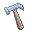

| Tool Mentor: Managing the Design Model Using Rational Rose |
 |
|
| Related Elements |
|---|
OverviewThe following steps are performed to manage the Artifact: Design Model:
1. Create the Design ModelThe Artifact: Design Model can be represented in Rational Rose using a package within the Logical View named "Design Model". The design model represents a level of abstraction close to the source code. For example, classes in the design model typically have a language and model properties assigned, which define the mapping to code. 2. Create packages in the Design ModelA package is a general-purpose model element that organizes model elements into groups. A system may be thought of as a single, high-level package, with everything else in the system contained in it.
3. Create layers within the Design ModelA model may contain several layers, which you visualize as packages, one package per layer. Layers may be nested. To distinguish packages as layers you should add the stereotype "layer" to each package. In addition, you should use the Documentation field in the Package Specification to describe the package. 4. Document the Model organizationEvery model needs a class diagram showing the layer and subsystem organization of the model. This should be the Main diagram. Consider renaming the diagram "Model Organization". Drag and drop the packages that represent the layers or subsystems into the diagram. |
© Copyright IBM Corp. 1987, 2006. All Rights Reserved. |